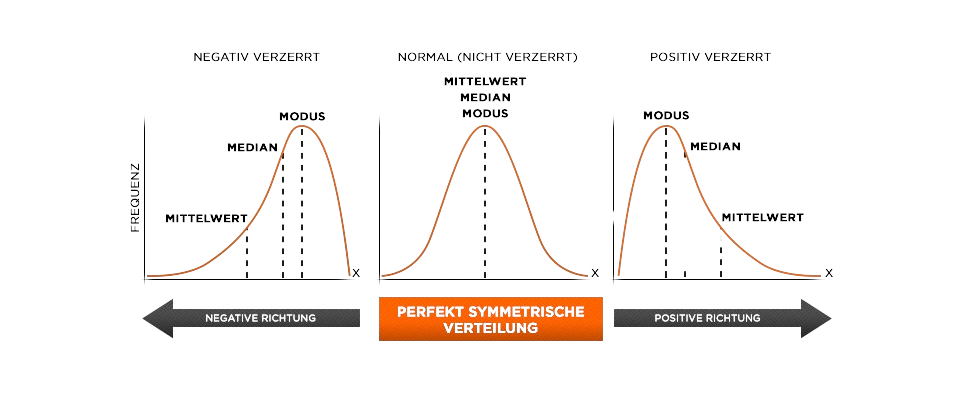
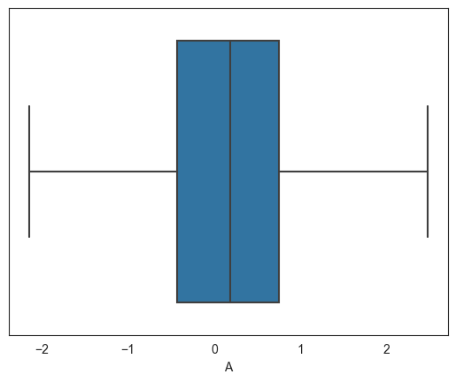

Das arithmetische Mittel ist ein Lagemaß, das den Mittelwert einer Stichprobe angibt. Er gehört zu den wichtigsten Kennzahlen der deskriptiven Statistik.
Definition
Das arithmetische Mittel ist definiert als \[\overline{X} = \frac{1}{n} \sum_{i=1}^n x_i.\]
Gegeben ist die allgemeine Stichprobe \[X = (x_1, x_2, \dots, x_n).\] Wie lautet das arithmetische Mittel?
\[\overline{X} = \sum_{i=1}^n x_i\]
\[\overline{X} = \frac{1}{n+1} \sum_{i=1}^n x_i\]
\[\overline{X} = \frac{1}{n} \sum_{i=1}^n x_i\]
\[\overline{X} = \frac{1}{n} \sum_{i=1}^n x_n\]
Das arithmetische Mittel ist definiert als \[\overline{X} = \frac{1}{n} \sum_{i=1}^n x_i.\]
Die letzte Antwort ist falsch, da jedesmal \(x_n\) summert wird. Dies ergibt:
\[\overline{X} = \frac{1}{n} \cdot (x_n + x_n + \ldots + x_n) = \frac{n}{n} \cdot x_n = x_n.\]
\(x_i\) wird hingegen immer um \(1\) im Index vergrößert und läuft durch alle Elemente in der Stichprobe.
Streumaße1 Punkt
Wie lautet \(Q_{0.25}\) für die folgende Stichprobe? \[X = (1, -2, 3, 9, -5).\]
-2
3
1
9
Die geordnete Stichprobe lautet \((-5, -2, 1, 3, 9)\).
Das untere Quartil ergibt sich aus \[ n \cdot p = 5 \cdot 0.25 = 1.25 .\] Da \(1.25\) keine
natürliche Zahl ist, wird auf \(2\) gerundet: \[Q_{0.25} = x_2 = -2.\]
Arithmetisches Mittel 1 Punkt
Ist das arithmetische Mittel gegenüber Ausreißern robust?
Ja
Nein
Dies ist nicht der Fall. Betrachte die Stichprobe
\[X = (1, 2, 3, 4, 5, 6, 7, 8, 9, 100).\]
Das arithmetische Mittel ist \(\overline{X} = 15.5\).
Wird nun der Ausreißer \(100\) durch \(10\) ersetzt, ergibt sich \(\overline{X} = 5.5\).
Der vorige Mittelwert wäre dann selbst ein Ausreißer.
2
Geometrisches Mittel
Das geometrische Mittel ist ein Lagemaß, das den Mittelwert einer Stichprobe angibt.
Es wird typischerweise bestimmt, um die mittlere Veränderungsrate einer Größe zu berechnen.
Angaben sind dann in der Regel in Prozent.
Defintion
Das geometrische Mittel ist definiert als \[X_{geom} = \sqrt[n]{x_1 \cdot \ldots \cdot x_n}.\]
Beispielsweise ist das geometrische Mittel der Stichprobe \((1, 2, 3, 4, 5)\) gegeben durch
\[X_{geom} = \sqrt[5]{1 \cdot 2 \cdot 3 \cdot 4 \cdot 5} = \sqrt[5]{120}.\]
Geometrisches Mittel 1 Punkt
Gegeben ist die allgemeine Stichprobe \[X = (x_1, x_2, \dots, x_n).\] Wie lautet das geometrische Mittel?
Das geometrische Mittel ist definiert als die \(n\)te Wurzel des Produkts aller Elemente in der Stichprobe.
\[X_{geom} = \sqrt[n]{x_1 \cdot \ldots \cdot x_n} \]
Grundwissen / 1 Punkt
Gegeben is die folgende Tabelle, die die Inflationsrate aus 5 Jahren angibt.
\begin{array}{|c|c|c|c|c|} \hline Jahr & 2015 & 2016 & 2017 & 2018 & 2019 \\ \hline Inflationsrate & 0.3 & 0.5 & 0.8 & 1.1 & 1.4 \\ \hline \end{array}
Welcher Mittelwert eignet sich hier?
arithmetisches Mittel
geometrisches Mittel
Das geometrische Mittel eignet sich hier, da die Inflationsrate in Prozent angegeben ist.
\[X_{geom} = \sqrt[5]{0.3 \cdot 0.5 \cdot 0.8 \cdot 1.1 \cdot 1.4} = 0.8\]
Grundwissen / 1 Punkt
Eine
ist nicht unbedingt representativ für die .
Mit zunehmender wird die Stichprobe bei zufälliger Auswahl
jedoch immer .
hello
Streumaße 1 Punkt
Bestimme die Standardabweichung der Stichprobe \[X = (-1,1,-1,1,-1,1,-1,3,-2).\]
Check Answer
2
Die Standardabweichung ist definiert als \[s_x = \sqrt{\frac{1}{n} \sum_{i=1}^n (x_i - \overline{x})^2}.\]
Für die gegebene Stichprobe ergibt sich
\begin{array}{lll} s_x & = & \displaystyle 7 \cdot (1-0)^2 + (3 - 0)^2 + (-2 - 0)^2 \\ & = & \sqrt{\frac{20}{5}} \\ & = & 2
\end{array}
Hinweis: \((-1)^2 = 1^2\)
3
Der Modus
Der Modus ist ein Lagemaß, das den Wert angibt, der am häufigsten in einer Stichprobe vorkommt.
Er muss jedoch nicht eindeutig sein. In der folgenden Auflistung von Personenzahlen mit verschiedenem Alter ist der
Modus \(X_{mod} = 20\) und \(X_{mod} = 24\).
Alter
20
21
22
23
24
25
26
27
28
Anzahl
3
2
1
1
3
1
1
1
1
Definition
Der Modus \(X_{mod}\) ist der Wert, der am häufigsten in einer Stichprobe vorkommt.
Der Median / 1 Punkt
Gegeben ist die allgemeine Stichprobe \[X = (x_1, x_2, \dots, x_n).\] Wie lautet der Median wenn \(n\) gerade ist?
Der Median ist definiert als der Mittelwert der beiden mittleren Elemente, wenn \(n\) gerade ist.
\[\tilde{X} = \frac{1}{2} \cdot (x_{\frac{n}{2}} + x_{\frac{n}{2}+1})\]
Gegeben ist die allgemeine Stichprobe \[X = (x_1, x_2, \dots, x_n).\]
Wie lautet der Median wenn \(n\) ungerade ist?
\[x_{\frac{n}{2}}\]
\[x_{\frac{n-1}{2}}\]
\[x_{\frac{n+1}{2}}\]
\[x_{\frac{n}{2}+1}\]
Der Median einer ungeraden Stichprobe ist definiert als das mittlere Element. \[\tilde{X} = x_{\frac{n}{2}}\]
Aufgabe 2
Lagemaße und Verteilungen 4 Punkte

1 Punkt
Die Abbildungen zeigen bimodale Verteilungen.
richtig
falsch
Die Aussage ist falsch, es handelt sich um unimodale Verteilungen.
1 Punkt
Die linke Abbildung zeigt eine linksschiefe Verteilung.
Für diese gilt \[\overline{X} \le \tilde{X} \le \overline{X}_M.\]
richtig
falsch
Die Aussage ist richtig, bei einer linksschiefen unimodalen Verteilung ist der Modalwert,
also das Maximum, nach rechts verschoben.
1 Punkt
Die rechte Abbildung zeigt eine rechtssteile Verteilung.
richtig
falsch
Die Aussage ist falsch, rechtssteil ist synonym zu linksschief und damit dass Gegenteil zur vorherigen Aussage.
Streumaße4 Punkte
Wie werden die folgenden Streumaße abgekürzt?
1 Punkt
Stichprobenabstand
\(s_x\)
\(IQR\)
\(s_x^2\)
\(R\)
Der Stichprobenabstand wird mit \(R\), für range, abgekürzt.
1 Punkt
Interquartilabstand
\(s_x\)
\(IQR\)
\(s_x^2\)
\(R\)
Der Interquartilabstand wird mit \(IQR\) abgekürzt, für interquartile range.
1 Punkt
Varianz
\(s_x\)
\(IQR\)
\(s_x^2\)
\(R\)
Die Varianz wird mit \(s_x^2\) abgekürzt.
1 Punkt
Standardabweichung
\(s_x\)
\(IQR\)
\(s_x^2\)
\(R\)
Die Standardabweichung wird mit \(s_x\) abgekürzt und ist die Wurzel der Varianz.
4
Der Median
Der Median ist ein Lagemaß, das den Wert angibt, der in einer geordneten Stichprobe in der Mitte liegt. Für eine ungerade Stichprobe ist der Median das mittlere Element.
Für eine gerade Stichprobe ist der Median der Mittelwert aus den beiden mittleren Elemente.
Definition
\(X = (x_1, x_2, \dots, x_n)\) sei eine geordnete Stichprobe.
\[\tilde{X} = \begin{cases} x_{\frac{n+1}{2}} & \text{falls } n \text{ ungerade} \\ \frac{1}{2} \cdot (x_{\frac{n}{2}} + x_{\frac{n}{2}+1}) & \text{falls } n \text{ gerade} \end{cases}\]
Beispielsweise ist der Median der Stichprobe \((5, 6, 7, 8, 9)\) gegeben durch
\[\tilde{X} = x_{\frac{5+1}{2}} = x_{3} = 7.\]
Für die Stichprobe \((5, 6, 7, 8, 9, 10)\) ergibt sich da \(n = 6\) gerade ist, dass
\[\tilde{X} = \frac{1}{2} \cdot (x_{\frac{6}{2}} + x_{\frac{6}{2}+1}) = \frac{1}{2} \cdot (x_3 + x_4) = \frac{1}{2} \cdot (7 + 8) = 7.5.\]
Streumaße1 Punkt
Gegeben ist die folgende Stichprobe \[X = (1, -2, 3, -4, 5, -6, 7, -8, 9, -5).\] Bestimme den Stichprobenabstand.
Check Answer
17
Der Stichprobenabstand ist definiert als \[R = x_{max} - x_{min}.\]
Für die gegebene Stichprobe ergibt sich
\begin{array}{lll} R & = & \displaystyle
x_{max} - x_{min} \\ & = & \displaystyle
9 - (-8) \\ & = & 17 \end{array}
5
Quartile
TEXT
TITLE
6
Boxplots und Interquartilabstand
Ein Boxplot ist ein Diagramm, das die Verteilung einer Stichprobe grafisch darstellt. Er besteht aus einer Box,
die die mittleren 50% der Stichprobe umfasst und sogenannten Whiskern, also Linien, die von der Box ausgehen und bis
zum Minimum bzw. Maximum der Stichprobe reichen. Ausreißer werden durch Punkte dargestellt, die außerhalb der
Whisker liegen.
Boxplot
Die grafische Darstellung der Lagemaße \[x_{min}, Q_{0.25}, \tilde{X}, Q_{0.75}, x_{max}\] wird als Boxplot bezeichnet.
Betrachtet beispielsweise einen großen Datensatz:
1
2
3
4
5
...
96
97
98
99
100
0.471435
-0.720589
0.015696
0.953324
0.405453
...
1.572743
0.193464
-0.755862
0.332507
0.061988
Mithlife einer Statistiksoftware lassen sich die Lagemaße berechnen womit der Boxplot erstellt werden kann.
Jeder der Querstriche kennzeichnet eines der fünf Lagemaße.
Minimum
-2.220589
Q1
-0.504707
Median
0.291976
Q3
0.596714
Maximum
2.492454

Im Folgenden beweisen wir den Verschiebungssatz aus der deskriptiven Statistik.
Verschiebungssatz
Für eine Stichprobe \(X = (x_1, x_2, \dots, x_n)\) und eine Konstante \(c \in \mathbb{R}\) gilt
\[SQ_x = \sum_{x=1}^n x_i -n \cdot \overline{x} .\]
A proof is given in the following: